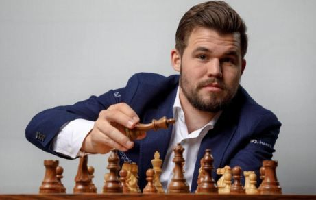
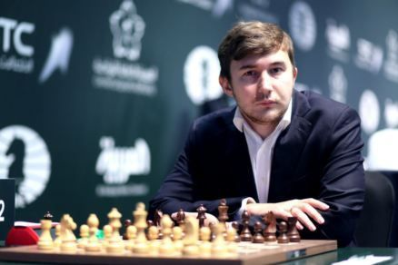

Матч за звание чемпиона мира по шахматам 2016
Матч за звание чемпиона мира по шахматам 2016 (55-й в истории шахмат) проходил с 11 по 30 ноября 2016 года между действующим чемпионом мира Магнусом Карлсеном (Норвегия) и претендентом Сергеем Карякиным (Россия) в Нью-Йорке
Матч начался с семи ничьих подряд, прежде чем Карякин выиграл восьмую партию. Карлсен сравнял счёт, выиграв десятую партию. Все остальные партии были сыграны вничью, так что после первых 12 партий счёт был равным — 6:6, и судьба чемпионского титула была решена на тай-брейке. Первые 2 партии тай-брейка закончились вничью, а оставшиеся две партии выиграл Карлсен, сохранив в итоге звание чемпиона мира по шахматам.
Участники
Действующий чемпион
Магнус Карлсен
26 лет
Рейтинг на момент начала матча: 2853
Претендент
Сергей Карякин
26 лет
Рейтинг на момент начала матча: 2772
По правилам ФИДЕ действующий чемпион мира должен защищать свой титул в матче с победителем турнира претендентов. Магнус Карлсен впервые стал чемпионом мира по шахматам в 2013 году, выиграв в аналогичном мачте у Вишванатана Ананда. После этого он уже в качестве чемпиона мира в 2014 году вновь играл с Анандом, в котором опять одолел индийца.
Сергей Карякин стал претендентом на звание чемпиона мира по шахматам, выиграв турнир претендентов, проходивший с 10 по 28 марта 2016 года в Москве, где восемь лучших игроков играли в два круга. Карякин выиграл турнир набрав 8½ очков в 14 играх, опередив Фабиано Каруану и бывшего чемпиона мира Вишванатана Ананда, каждый из которых набрал по 7½ очков.